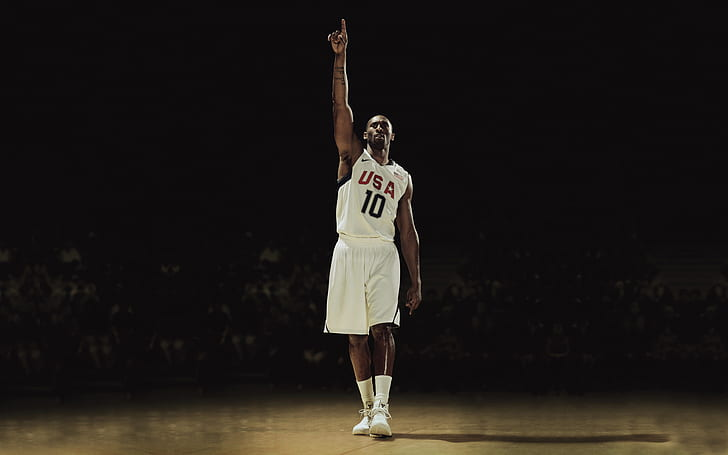
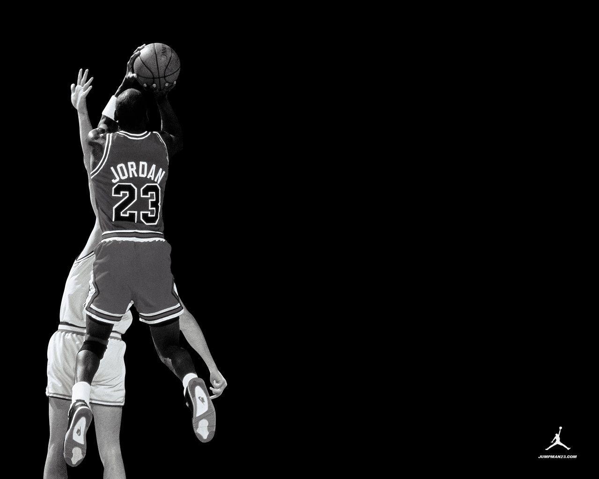

Nike Air Jordan
The first Air Jordan was produced for Michael Jordan during his time with the Chicago Bulls in 1984 and designed by Peter b. Moore. The red and black colorway of the Nike Air Ship, the prototype for the Jordan I, was later outlawed by then-NBA Commissioner David Stern for having very little white on them. (This rule, known as the "51 percent" rule, was repealed in the late 2000s.) The first Air Jordan was produced for Michael Jordan during his time with the Chicago Bulls in 1984 and designed by Peter b. Moore. The red and black colorway of the Nike Air Ship, the prototype for the Jordan I, was later outlawed by then-NBA Commissioner David Stern for having very little white on them. (This rule, known as the "51 percent" rule, was repealed in the late 2000s.)
The Jordan Brand released their second two-pair package named the "Old Love New Love" (OLNL), which consisted of the Air Jordan I Retro model in Mid White/Black-Varsity Red (Black Toes) and Black/Varsity-Maize/White. It was released on April 21, 2007. The Old Love New Love package was sold for $200.00. The pack represented Jordan's passions, the old love being basketball the new love being motorcycle racing.
